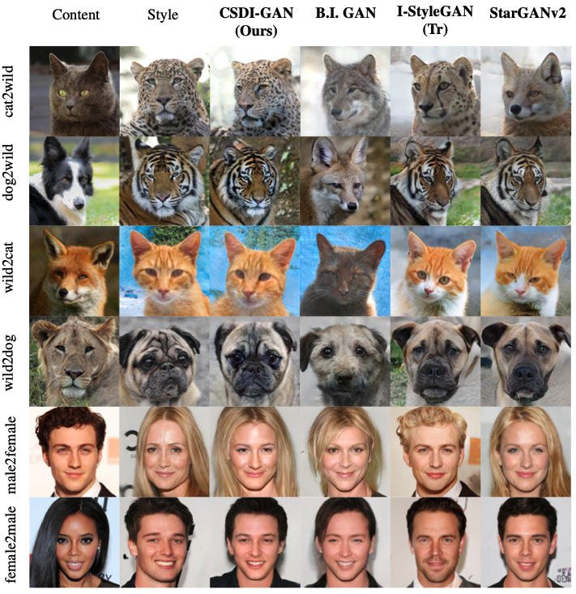
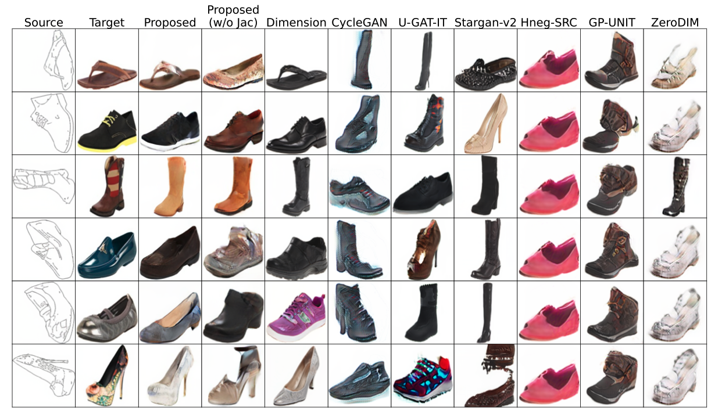
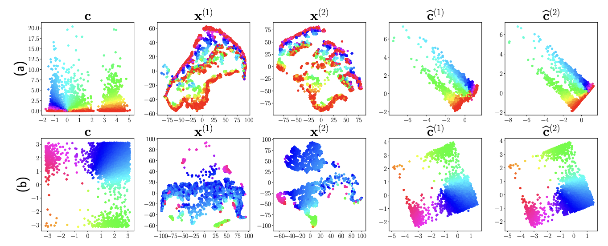
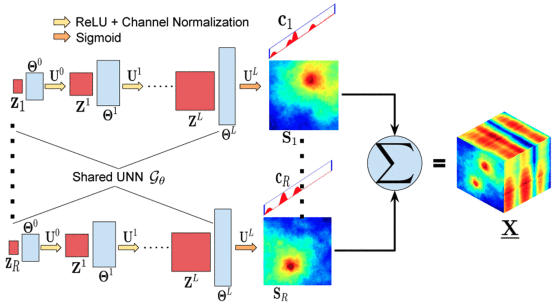
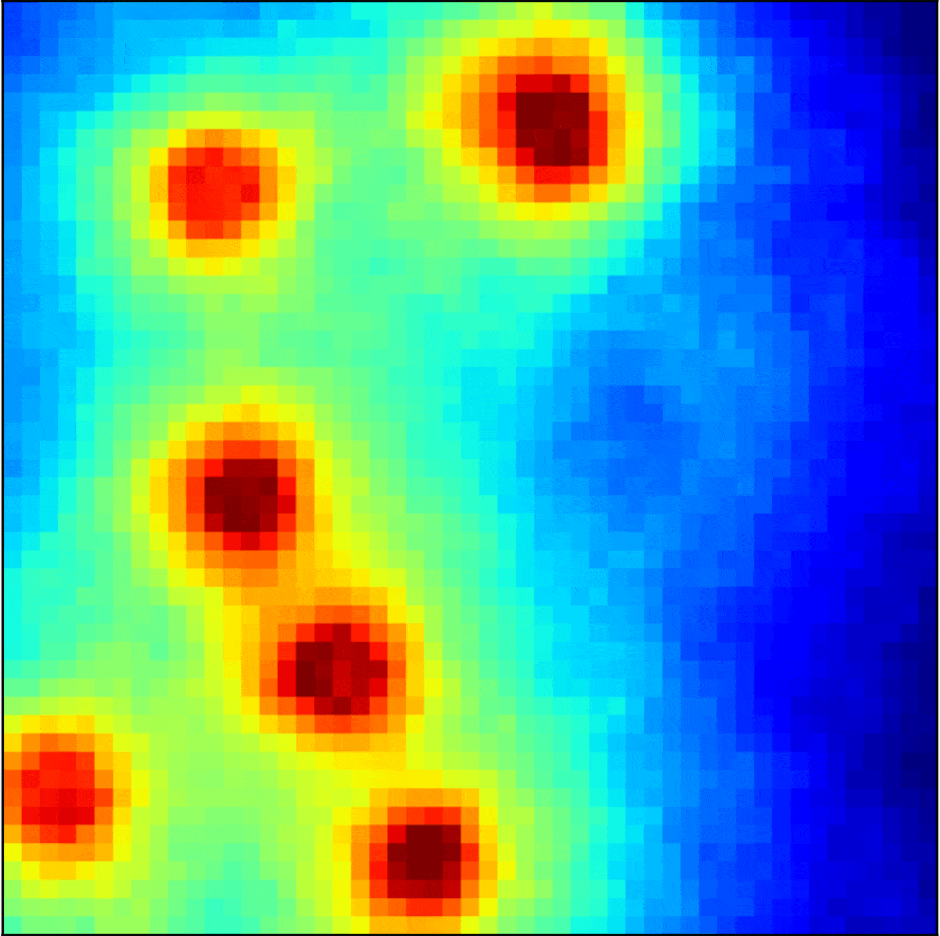
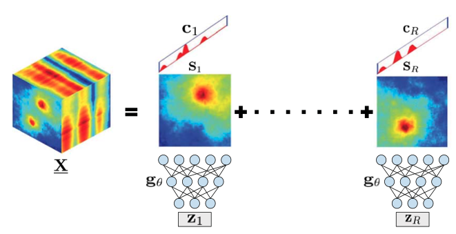
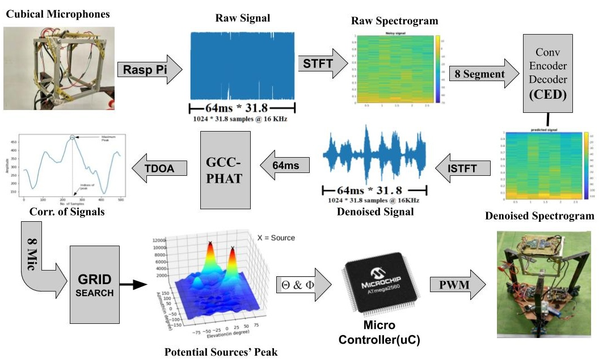
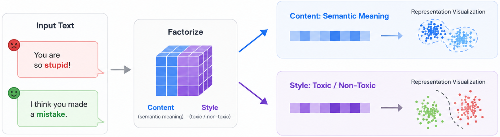
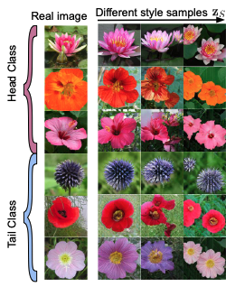

Writing Soon...
Evolution of Generative Models
A brief history of generative models and their evolution.

PhD in CS with minor in AI | Oregon State University
Actively seeking full-time opportunities in machine learning and AI.
I am a Ph.D. candidate in Computer Science at Oregon State University, advised by Dr. Xiao Fu, with a minor in Artificial Intelligence. My research focuses on machine learning, particularly controllable generative models, unsupervised and self-supervised representation learning, multimodal learning, and optimization for AI. I am especially interested in developing theoretically grounded methods for learning meaningful and identifiable representations from complex, unpaired, and multimodal data.
My recent work includes content-style representation learning, identifiable domain transfer, generative models for inverse problems, and activation-steering methods for improving large language model behavior. My research has been published in venues including NeurIPS, ICML, IEEE TSP, SPL, and ICASSP.
Before starting my Ph.D., I worked as a Data Scientist at Docsumo, where I developed computer vision and natural language processing systems for extracting structured information from financial and business documents such as invoices, bank statements, W2 forms, and ACORD documents.
I'm currently seeking full-time opportunities in machine learning and would love to connect with researchers, engineers, and teams working on impactful AI/ML problems.
PhD in CS at Oregon State University, advised by Xiao Fu, with a minor in Artificial Intelligence. Research in controllable generative models, unsupervised and self-supervised representation learning, multimodal learning, and optimization for AI.
Data Scientist at Docsumo. Built computer vision and NLP systems for extracting structured information from financial and business documents (invoices, bank statements, W2s, ACORD forms). Worked on OCR pipelines, table detection, template matching, named entity recognition, semantic matching, and few-shot learning.
BE in Electronics and Communications Engineering at IOE, Pulchowk Campus, Tribhuvan University, Nepal. Awarded a fully funded Nepal Government Scholarship.
Member of the Robotics Club, Pulchowk Campus. Represented Nepal in the Asia-Pacific Robotics Competition.

International Conference on Machine Learning (ICML) 2026
In this paper, we propose a new way to learn content and style representations from unpaired multi-domain data. Our key idea is differential independence, which separates content and style by making their local effects on the data manifold orthogonal. This condition works even when content and style are statistically dependent and even when the model has a dense Jacobian. We also introduce a scalable regularizer and show benefits in counterfactual generation and domain translation.

International Conference on Machine Learning (ICML) 2026
In this paper, we study how to learn reliable mappings between source and target domains with minimal supervision. We show that, under a sparsity structure, matching distributions plus one paired anchor sample can identify the correct transfer map. We also introduce a scalable regularizer and validate the method on synthetic and real-world domain transfer tasks.

Neural Information Processing Systems (NeurIPS) 2024
In this paper, we study shared representation learning from unaligned multi-modal data. We propose a distribution-matching framework that can identify modality-invariant shared components without requiring paired samples. Our theory gives mild conditions for identifiability, and experiments on synthetic and real-world datasets support the results.

IEEE Signal Processing Letters (SPL) 2025
In this paper, we propose a training-free method for reconstructing high-dimensional signals (e.g., radio maps) using untrained neural networks. Our approach uses the network architecture and a tensor factorization model using spatio-spectral structure as priors, allowing accurate tensor estimation from limited sensor data without needing a training dataset.

IEEE Transactions on Signal Processing (TSP) 2023
This paper develops machine learning methods for recovering structured high-dimensional signals from sparse, noisy, and quantized observations. By modeling radio maps as low-dimensional tensors, the method can reconstruct useful information even when only limited low-resolution sensor data is available. This is relevant to scalable sensing, edge AI, wireless intelligence, and resource-constrained machine learning systems where collecting or transmitting full-resolution data is expensive.

IEEE International Conference on Acoustics, Speech and Signal Processing (ICASSP) 2023
This project develops machine learning methods for recovering high-dimensional signals from sparse and quantized sensor feedback. By combining deep generative priors, random quantization, and maximum likelihood estimation, the method enables accurate reconstruction when full-resolution data is unavailable. This is relevant to edge AI, wireless sensing, compressed sensing, and resource-constrained ML systems where communication bandwidth and data quality are limited.

ISCRAM 2020 — International Conference on Information Systems for Crisis Response and Management
This project combines robotics, signal processing, and machine learning for real-time audio-based localization. We built an autonomous robot with an eight-microphone array and used GCC-PHAT for time-delay estimation to identify the direction of sound sources. We also developed a VAE-based audio denoiser using spectrogram representations, improving robustness in noisy environments. The project is relevant to embodied AI, audio ML, robotics perception, and disaster-response systems.

This project factorizes LLM activations into two parts: content, which captures the semantic meaning of the text, and style, which captures how the meaning is expressed, such as toxic or non-toxic language. By separating content from style, the goal is to preserve the original meaning while modifying the expression toward a more desirable representation.

Generative model for image classes that have far fewer samples than others, leveraging cross-domain information to handle long-tailed class distributions generations.
A brief history of generative models and their evolution.
A guide to distribution matching for generative models.